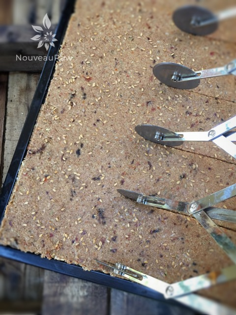
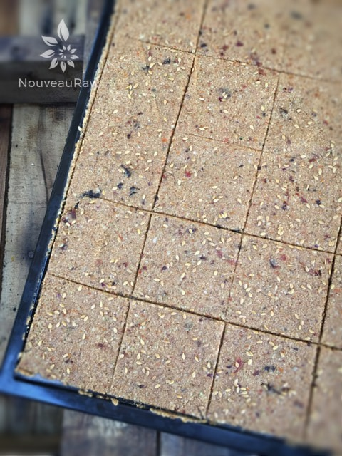
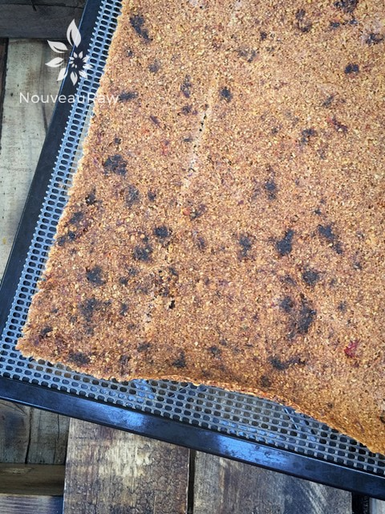

Zesty Italian Flax Crackers
~ raw, vegan, gluten-free, nut-free ~
Flax crackers are great for those just learning how to make raw crackers. At least it was for me. I was 100% raw prior to owning a dehydrator and I tell you what, it was like Christmas the day I got mine.
The beauty with flax crackers is the fact that you can use just about veggie, spice, and seasoning when creating them. I often don’t use a recipe when making them so they are very forgiving.
Let’s chat a little about the ingredients that I used, just in case you are one who likes to know exactly what to use and what to do.
When using sun-dried tomatoes, I used dry ones that weren’t packed in oil. Since they tend to be chewy and hard to blend into the batter, I suggest re-hydrating them in warm water.
I peeled most of the skin off of the zucchini. I left a little for a splash of color throughout the crackers. If you can find organic ones, by all means, leave the skin on. But if you can’t find organic, peel those puppies.
Regarding the onion… you can use any type that you want but I recommend knowing the strength of them prior to adding them into the food processor. Some onions are much more pungent than others and can easily high-jack a recipe.
Lastly, I used ground flaxseeds. They thicken the batter and act as a binder. I always recommend grinding flaxseeds to a flour-like texture as needed. Because they are high in healthy fats, they are susceptible to going rancid if not stored and used properly. You can learn about them (here). Well, I about covered everything that I wanted to. I hope you enjoy this recipe. Many blessings, amie sue
yields 50 (2.5 x 2.5″) square crackers
- 1 cup sun-dried tomatoes, rehydrated
- 4 cups chopped zucchini
- 1 cup diced red onion
- 1/2 tsp Himalayan pink salt
- 1 tsp garlic powder
- 2 tsp ground chili powder
- 1 1/2 cups ground flax flour
Preparation:
- Rehydrate the sun-dried tomatoes in enough hot water to cover them. Soak them while you pull the rest of the recipe together.
- After they are done soaking, drain the soak water but keep it aside, just in case you need to add more moisture to the batter.
- In a food process, fitted with the “S” blade, combine the zucchini, sun-dried tomatoes, onion, salt, garlic powder, and chili powder. Process until everything is well mixed and it is a taste like texture.
- Add the ground flax and pulse together.
- If the batter is too thick, add a little of the leftover soak water from the sun-dried tomatoes. About 2 Tbsp at a time.
- The batter should be thick but spreadable.
- Place 1/2 of the batter per non-stick dehydrator sheet.
- Spread 1/4″ thick, or if you own the Excalibur 9 tray dehydrator, spread the batter from edge to edge.
- Square up the edges and score into desired cracker size.
- Sprinkle coarse sea salt and flax seeds on top.
- Dehydrate at 145 degrees (F) for 1 hour, then reduce to 115 degrees (F) for about 16 hrs.
- This will depend on how thick you make them.
- About halfway through their drying process remove from the dehydrator, flip them over onto a mesh sheet that comes with the machine and peel off the non-stick sheet. Continue to dry until crisp.
- Storage: Break apart and place in a glass jar with a lid that seals.
Culinary Explanations:
- Why do I start the dehydrator at 145 degrees (F)? Click (here) to learn the reason behind this.
- When working with fresh ingredients it is important to taste test as you build a recipe. Learn why (here).
- Don’t own a dehydrator? Learn how to use your oven (here). I do however truly believe that it is a worthwhile investment. Click (here) to learn what I use.

Spread the batter evenly across the dehydrator sheets. Score into cracker shapes and slip into the dehydrator.

Above you will see what the crackers look like right before heading into the dehydrator. Below is the end result. It’s amazing how much they darken and shrink up. But none of that affected the flavor… they turned out very delicious.

You are seeing the under-belly of the cracker, since that is the way it came out of the dehydrator after flipping them and removing the non-stick sheet.
© AmieSue.com